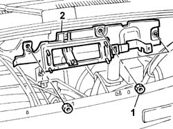

1044b14 FUEL FILTER MOUNTING, INJECTION CONTROLUNIT AND PRE-HEATING CONTROL UNIT - R.R. WITH INTERFERING COMPONENTS REMOVED.
- Path
- Procedures > 10 ENGINE > 1044 FUEL CIRCUIT PUMP/AND DEVICES > 1044B fuel filters > 1044b14 FUEL FILTER MOUNTING, INJECTION CONTROLUNIT AND PRE-HEATING CONTROL UNIT - R.R. WITH INTERFERING COMPONENTS REMOVED.
- Kind
- repair procedure (removal / refitting; the operation number is the code)
- Applies to
- all engines; all production periods
- Interactive page
- https://sloeber94.github.io/elrnDB-fDbl/en/#/2584452
Applies to: all engines; all production periods
 Removing
Removing
 Refitting
Refitting1. Undo the retaining nuts.
2. Remove the bracket supporting the filter, injection control unit and preheating control unit.

Applies to: all engines; all production periods
Refitting
RemovingFit the bracket supporting the filter, injection control unit and preheating control unit.
Tighten the nuts securing the bracket to the partition to torque.
 | Fastening | Component | Ø | Value (daNm) |
|---|---|---|---|---|
- | Nut | FUEL FILTER MOUNT | M6 | 0.85 |